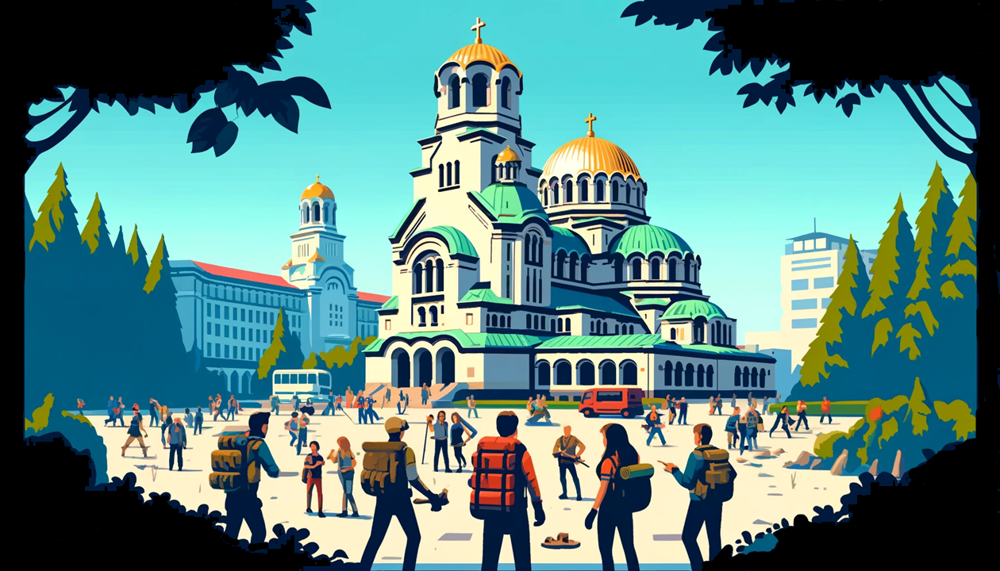
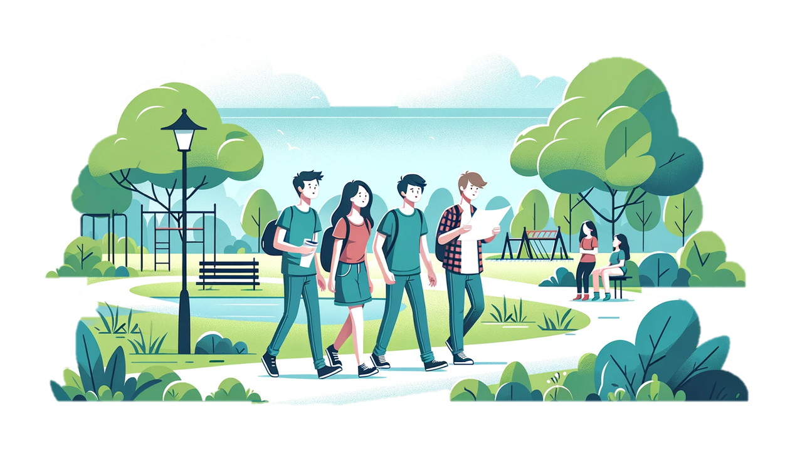

Разгадай тайните на улиците на София
Купи си игра
Играта започва с първата загадка - може да е шифър, игра с думи, търсене в книги и стихотворения и т.н. Всяка решена загадка е ключът към следващата стъпка. Тя ще ви даде подсказки и за мястото, към което трябва да се насочите.
След като разгадаете загадката, тя ще ви насочи към конкретно място в рамките на играта - паметник, историческа сграда, хотел, точен адрес или координати. Всяка локация е внимателно подбрана, за да е винаги достъпна независимо от това кога играете играта.
На място, ще трябва да откриете ключовия елемент от загадката - може да е определена година, име или символ, указан във въпроса. Този елемент е отговорът, който ще ви позволи да продължите напред. Въведете го правилно в приложението и вижте как се развива приключението!
"Разгадай София" е вълнуващо приключение, което ви извежда от традиционните затворени ескейп стаи и ви предлага уникална възможност да преоткриете града си. По време на играта, ще имате възможността да видите София под нов ъгъл, откривайки загадки, които чакат да бъдат разгадани.
Нашата игра е отворена за неограничен брой участници и може да се играе по всяко време без нужда от предварително записване. Това осигурява голяма гъвкавост и позволява на участниците да се включат в приключението, когато им е най-удобно, като продължителността на играта често надхвърля тази на стандартните ескейп стаи, предлагайки по-пълноценно изживяване.
Тази игра не само предизвиква ума ви с интригуващи загадки, но и стимулира тялото чрез необходимостта от разходки из града, което добавя здравословен и активен компонент към забавлението. Участниците трябва да се движат между различни точки, което прави играта особено динамична и вълнуваща.
Всяка локация в играта "Разгадай София" е внимателно подбрана, за да предостави на играчите не само физическо, но и умствено предизвикателство. Всеки ъгъл на града може да скрие ключ към следващата загадка, превръщайки всяка стъпка във вълнуващо откритие и разгръщайки нови страници от историята, която заедно разказваме.

Това беше перфектният начин да опознаем София с приятели. Загадките бяха предизвикателни и ни караха да мислим, докато се наслаждавахме на града. Благодарим за невероятния ден!
Невероятно преживяване! Играта Разгадай Центъра на София
ни
отведе на места в столицата, за които дори не подозирахме, че
съществуват. Пълно с интересни задачи, препоръчвам на всеки!
Като ученик в София, мислех, че знам всичко за града, но тази игра ме изненада приятно с нови места и загадки. Много ми хареса, защото не съм пробвал нещо такова преди. Великолепен начин да си починеш!